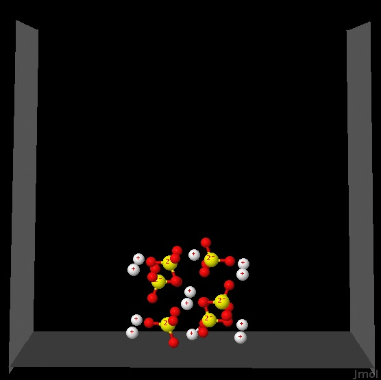
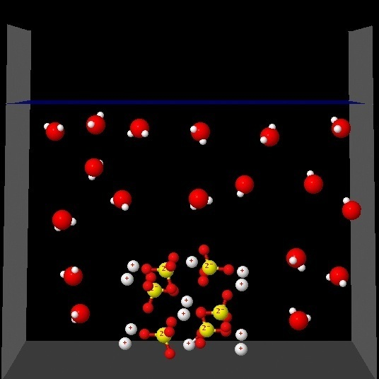

Disolución 1


La siguiente figura representa una muestra de Na2SO4 (sólido) preparada para ser disuelta en agua.
|  |
Al pulsar en cada una de las siguientes figuras se observará una animación que en cada caso trata de ser una representación de lo que le sucede a esa sal cuando se disuelve en agua.
|  |
Después de observar las cuatro animaciones indica cual de ellas representa mejor los cambios que tienen lugar en ese proceso de disolución:
Correcto. En presencia de agua los iones se distribuyen
de forma regular en el medio, rodeados por moléculas de agua. No se han mostrado las interacciones ion-dipolo
de agua.
|
|
Incorrecto. La animación muestra que las moléculas de agua
envuelven la muestra sólida sin que se produzca la separación de los iones en el medio acuoso.
|
|
Incorrecto. La animación muestra que los iones se separan
pero las moléculas de agua no penetran entre los iones. Solo los rodean exteriormente.
|
|
Incorrecto. La animación muestra que los iones se separan del sólido
pero quedan en el fondo sin que las moléculas de agua se situen entre los iones.
|